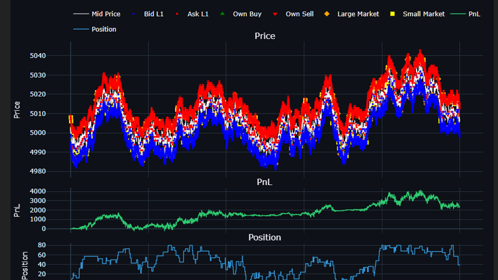
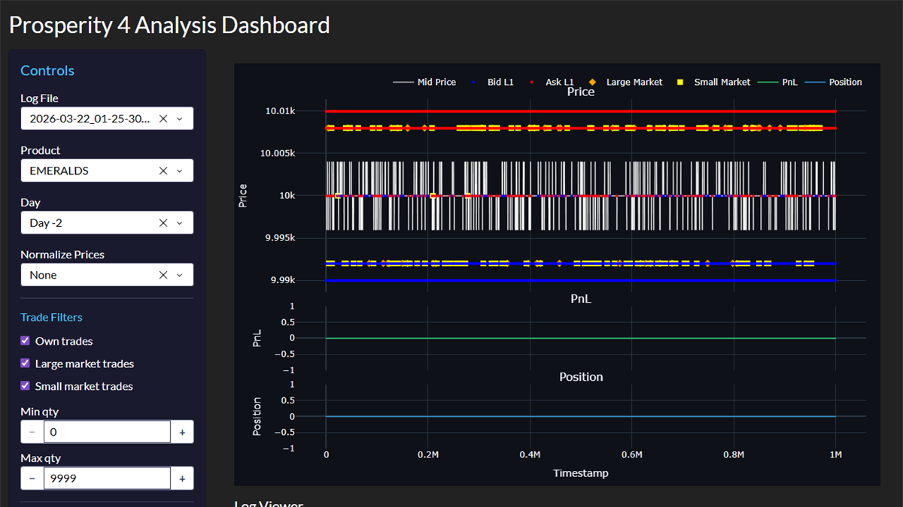

IMC Prosperity 4: Algorithmic Trading
Options market-making and statistical strategies for IMC’s Prosperity 4 algorithmic-trading competition.

Overview
Prosperity is a multi-round algorithmic-trading competition with a simulated exchange. Each round exposes new instruments, including options, that reward pricing them correctly and quoting two-sided liquidity without taking on unwanted directional risk.
What I built
Options market-making built on Black-Scholes pricing with Greeks, fitting the implied-volatility smile (a quadratic / LOOCV-polynomial and SVI parameterisation) so quotes stay consistent across strikes, plus delta hedging on the underlying. Alongside that, a mean-reversion strategy and a hand-written stationarity / time-series test library (ADF, KPSS, Ljung-Box, variance-ratio, and Phillips-Perron) feeding a grid-search optimiser, all validated against a submodule backtester with a Dash analytics dashboard.
Highlights
- End-to-end options market-maker: pricing → IV smile → quoting → delta hedging.
- Reusable statistical-testing toolkit for validating signal stationarity.
- Parallel grid-search tuning validated over a dedicated backtester.

